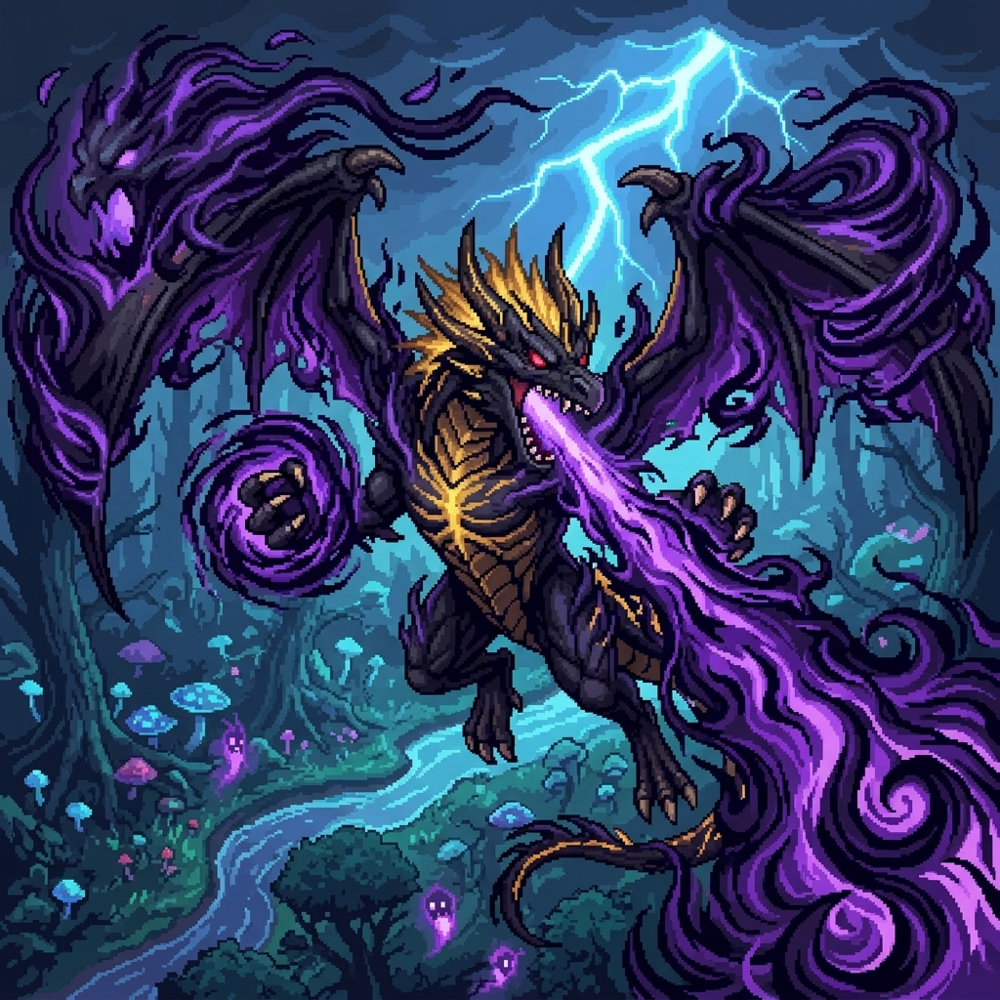
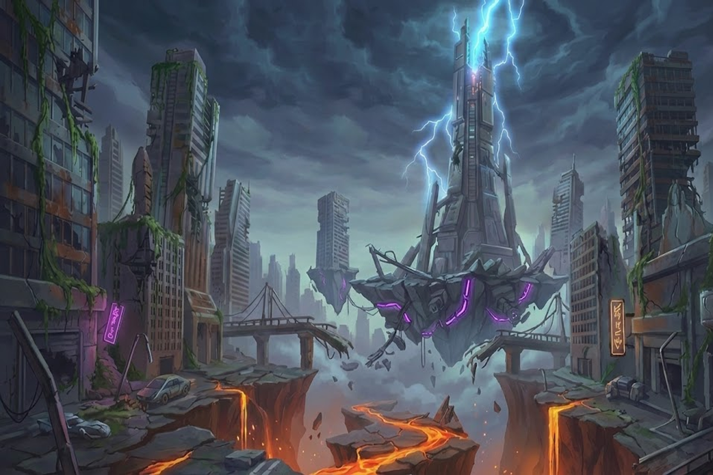

當伊格尼斯親臨幽魂森林，他並非如往常般焚盡一切，而是張開那足以遮蔽命運的雙翼，引導森林中積累數萬載的暗影幽魂倒灌入體。這股陰冷的力量與他體內暴戾的始祖龍焰產生了前所未有的聚變，將他的生命層次昇華至連神靈都恐懼的深淵境界。
他噴吐出的不再是單純的火焰，而是能消融現實空間的*暗影虛無息。那一對巨大的暗影幽魂羽翼，彷彿有無數哀嚎的靈魂在其中掙扎，為他提供無窮無盡的咒力。在暗影的強化下，伊格尼斯的軀體幾近不滅，每一次怒吼都足以讓克羅姆平原的天空崩裂。
描述： 「將太古的雷電與幽魂的怨念共鳴，形成絕對不可逆轉的『天譴之矛』。在此雷鳴聲中，世界將被強行同步至寂滅。這是雷霆的極意，更是影之主對生者的最終判決。」
視覺感： 隨著伊格尼斯的低鳴，他從口中噴射出一顆融合了暗影幽魂怨念與高壓火能的「葬靈彈」。火球外圍被一層厚重的、閃爍著詭譎紫藍色的「冥焰」光暈包裹。
伊格尼斯將自身始祖龍焰與幽魂森林數萬載的無盡怨念共鳴，凝練出一種具有自我意識的虛無生物——「暗火冥龍」。當他發出如鬼囓般的裂嘯時，強行從冥府深淵釋放出無數條被怨恨扭曲的冥龍。這些冥龍不具備正常的生物特性，而是由暗影與冥火構成的「靈魂捕食者」，它們將依循著死神的標記，對戰場進行絕對的靈魂收割。凡是被冥龍觸及的生靈，肉體將如焦土般乾枯，靈魂則被永恆禁錮在冥火之中，承受無盡的痛楚。
描述： 將無數渴求回歸陽世的怨靈壓縮至一線，對生者的領域進行絕對的侵略。在綠色靈火奔湧的水平線上，只有凋零與死寂才是唯一的永恆。
視覺感： 伊格尼斯高舉暗影幽魂雙翼，胸口的虛無心核燃起紫色的冥焰。召喚出被紫藍色冥焰纏繞的火龍在固定的水平高度整齊列陣，如同燃燒的暗藍色海嘯從畫面一側規律地交錯掃過。
描述： 這是來自穹蒼降下的冥龍枷鎖，將天與地強行連接。每一道垂直俯衝的幽火，皆是龍王意志對入侵者最沈重的葬送宣告。
視覺感： 冥龍從高空呈 90 度垂直俯衝而下，落點精準且固定。在大氣中留下久久不散的扭曲綠色光痕，迫使繼承者必須在極窄的縫隙中屏息移動。
描述： 釋放火龍原始的狩獵本能，在混沌的氣流中瘋狂竄動。這是無法預測的『狂瀾』，每一條火龍都在尋求著鮮血的氣息，讓汝在無序的火影中感受極致的窒息。
視覺感： 大量的冥龍以不穩定的高度、參差不齊的速度發動突襲。它們在空中留下扭曲的藍綠色軌跡，在大氣中留下久久不散的扭曲綠色光痕。
描述： 當龍王的怒火燃盡蒼穹，破碎的餘燼將化作星落之雨。這是不具備任何仁慈的肅清，大地將在火龍的自我獻祭中，迎來最後的毀滅樂章。
視覺感： 冥龍由上方各個角落隨機現身，以不規則的頻率紛紛墜落。在大氣中留下久久不散的扭曲綠色光痕。密集的打擊點將地面封鎖。
描述：來自九幽深處的至高咆哮，當斷界雷龍張口，生與死的帷幕將被強行撕裂。在綠色雷龍的怒吼中，一切防禦與因果皆將如薄紙般被輕易解構，化為虛無的殘響 。
視覺感： 於身前浮現出數個散發著慘綠色幽光的冥雷龍砲台。它們在固定的水平高度蓄能，隨後噴射出長達數千米的綠色龍形雷射。雷射邊緣閃爍著像素化的黑影電弧，帶著震耳欲聾的魂鳴聲，如同一道道切開深淵的綠色利刃。
描述： 當幽雷不再遵循規律，混亂便成了最終的律法。在此無序跳動的綠光中，唯有超越恐懼的本能，才能在現實坍塌的瞬間，抓往那萬分之一的生存機率。
視覺感： 冥龍砲台在戰場各個高度的閃現，噴吐的頻率與位置完全隨機。多道龍形雷射在空中劃出參差不齊的軌跡，整片戰場被瘋狂閃爍的綠色電光填滿。
描述： 來自虛無頂端的最終判決，在閃爍的綠色電火中，一切存在的形體都將被強制解構。在此『葬魂劫』下，凡夫俗子唯有在無盡的雷雨中感受靈魂的凋零。
視覺感： 伊格尼斯昂首發出震撼地脈的長嘯，周身迸發出如蛛網般密集的像素綠色電漿。隨即，一片盤旋著無數哀嚎幽魂、閃爍著紫黑色雷光的不詳雲層於戰場上方成型。雷雲之中會以極高的頻率，不間斷地降下數道粗大的、帶有強烈像素閃爍感的慘綠色落雷。
伊格尼斯發出低沉的靈魂共鳴，巨爪虛握，強行將方圓數里的物質抽離並壓縮成一顆暗影閃爍的虛無冥岩。當他將冥岩甩向蒼穹，整片戰場的重力場將發生不可逆轉的坍塌。隨後，無數被暗紅劫火纏繞的冥岩將穿透虛空降臨。這不僅是物理上的撞擊，每一顆冥岩都攜帶著「消融現實」的權能，凡是被冥岩觸及之處，物質與靈魂皆將化為最原始的塵埃。
描述： 來自虛冥的絕對重壓，劃破了生者的最後希望。這是無法逃避的『斷生痕跡』，每一顆冥岩都承載著崩塌文明的重量，將一切抗爭者壓入永恆的黑暗。
視覺感： 伊格尼斯 將凝聚的黑石甩向天空。隨即，數顆外表佈滿暗紅裂紋、散發著深紫色幽煙的巨型冥岩 從畫面左上方急速斜向墜落。
描述： 當蒼穹於右方碎裂，命運的終點早已注定。這是冥府深處的肅清律令，巨岩帶著傾覆世界的動能降臨，生靈唯有在絕對的重力面前俯首稱臣。
視覺感： 隨著伊格尼斯的暗影雙翼振動，冥岩從畫面右上方交錯落下。這些帶著強大動能與空間震盪感的像素隕星，由右向左形成密集的斜向壓制線，在半空中編織出毀滅的交錯網絡。
描述： 當虛無引力徹底失控，秩序將被終極的混亂取代。這是來自太古的『無間煉獄』，冥岩以毫無規律的角度紛紛墜落，在破碎與崩解中，見證世界重歸寂滅。
視覺感： 這是招式的最狂暴型態。冥岩不再遵循規律，而是隨機出現在天空各處，以不同角度與速度斜向砸向地面。戰場瞬間化為被巨石覆蓋的煉獄，挑戰者必須在極度混亂的冥岩雨中，尋找那萬分之一的生還間隙。
描述： 這是來自虛空深處的最終掃蕩。當葬風龍影掠過大地，生者的領域將被強行重置。在此螺旋的死律面前，任何物質的防禦都顯得蒼白無力，唯有徹底的消亡才是唯一的終點。
視覺感： 伊格尼斯猛然振翅，雙翼綻放出深紫色的強光，帶起一陣撕裂大氣的震盪波。隨即，一個由暗藍色與深紫色迷霧交織而成、外型如同一頭昂首咆哮巨龍的巨大氣旋 呼嘯而出。
描述： 這是來自冥府深處的最終狩獵。當破界影爪痕掠過大地，生者的領域將淪為被獵殺的荒野。任何物質的防禦都將如同薄紙般被輕易撕裂，化為虛無的殘屑。
視覺感： 伊格尼斯 猛然抬起右爪，龍爪瞬間被深紫色的虛無幽光與藍色的電漿徹底包裹，身體呈現出蓄勢待發的姿態。隨即，他猛然向前方揮出致命一擊，大氣產生劇烈的像素化扭曲。一個由暗藍色與深紫色迷霧交織而成、呈現出清晰且猙獰的巨大龍形爪痕氣旋 轟然推進。
伊格尼斯發出震顫靈魂的低鳴，將體內沸騰的冥府火能與虛無粒子全數灌注於佈滿棘刺的長尾之中，使其呈現出如深淵般深邃的紫黑色。當他爆發出毀滅性的腰力猛然橫甩，長尾掃過的軌跡會強行撕裂大氣，形成一道具備實體質量的「蝕世殘月」。這道半月型斬擊並非向四周擴散，而是具備極強的定向貫穿力，凡是被這道影刃劃過的物質，其分子結構將瞬間崩解，在虛無的絞殺下化作漫天飛散的紫色餘燼。
描述:這是來自冥府地平線的最終切割。當冥尾刃劃破黑暗，墜落的並非餘燼，而是世界被強行平分的宣告。
視覺感： 伊格尼斯在空中猛烈扭轉身軀，其長尾帶起一道扭曲空間的紫色弧光。隨即，一個巨大、呈完美半月型且閃爍著深紫色幽光與黑色虛空裂痕的「蝕世影刃」 轟然射出。影刃帶著無與倫比的厚重動能推進，所過之處地面被整齊地切開一道焦黑的溝壑，展現出足以攔腰斬斷一切希望的絕對破壞力。
關卡三 村莊西北方的新星科技城
